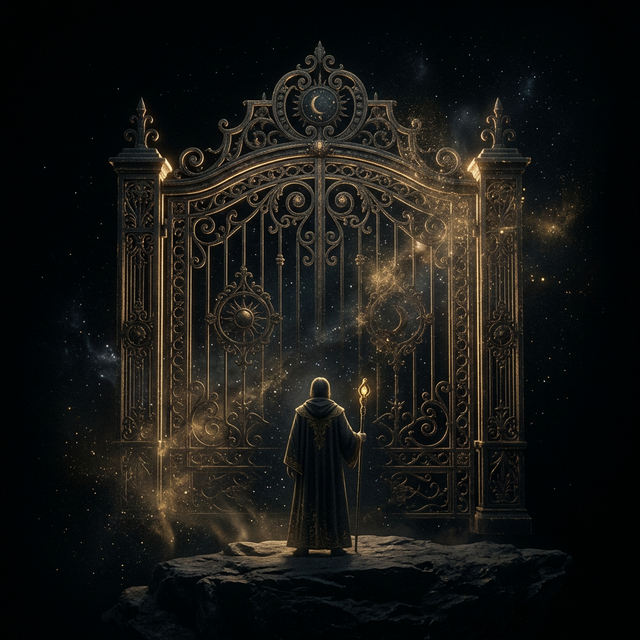

Every social system has invisible gates and they don't open by force. Whether you're entering a new industry, a creative circle, or a leadership tier, access is never granted to those who demand it. It's granted to those who have built the right signal over time.
Trust, relevance, and resonance accumulate quietly through consistent behavior, and at some point the door simply opens. A leader vouches for you, a peer steps aside, an opportunity appears. That's not luck.
How does access to social systems actually get granted, according to this model?
The mistake most people make is treating access as the goal. They push, they network aggressively, they try to shortcut their way in. But the gatekeepers of every system are pattern recognition machines. They are constantly reading your behavior, your tone, your consistency.
One moment of clarity or one act of genuine service can lock in a pattern that follows you. One misstep repeated becomes the story people tell about you. You become what you repeat in other people's worlds.
What are gatekeepers of social systems constantly doing when they interact with you?
The real play is to earn resonance before you need it. Show up inside a domain as someone who brings value, harmony, and momentum. Build authentically once you're in rather than treating entry as the finish line.
The people who last in any social system are not the ones who talked their way through the gate. They are the ones who made the space better after they arrived, compounding trust with every action until influence became a natural byproduct of who they had become.
What distinguishes the people who last in social systems from those who don't?
Someone attends every industry event, aggressively collects contacts, and immediately pitches their value in every conversation. They feel frustrated that despite all this activity, no real doors have opened. What does the Invisible Gate model say is the problem?
Early in your career you publicly argued with a respected figure in your field over something minor, and you were dismissive of their view. Years later you notice the doors in that community still feel slightly closed. What is the model's explanation?
Someone works hard to get accepted into a prestigious creative community. Once in, they stop contributing as consistently and begin focusing on leveraging their status and the connections they've made for personal gain. Over time their position erodes. What went wrong?
You do not break through the gate. You dissolve it - by becoming the kind of signal that makes the system want to let you in, and stay in.
Share your revelations. Question the consensus. Join the Malleable Reality collective to discuss these modules with others exploring the architecture of their minds.
Enter the Discord ↗